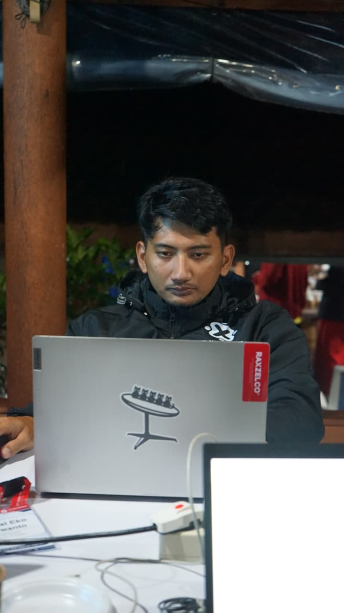

Professional Network Engineer
Spesialis dalam perancangan infrastruktur jaringan berskala besar, optimasi interkoneksi, routing dinamis BGP/OSPF, serta memastikan performa maksimal dengan zero downtime.

Saya adalah seorang Network Engineer profesional di industri telekomunikasi dengan spesialisasi mendalam pada ekosistem MikroTik. Memegang sertifikasi tingkat tertinggi (MTCINE - Expert), saya berpengalaman dalam merancang, mengoptimalkan, dan mengamankan arsitektur jaringan skala besar yang menuntut reliabilitas tinggi.
Fokus utama saya mencakup manajemen *routing* dinamis berbasis BGP/OSPF, implementasi teknologi MPLS, serta rekayasa trafik (*Traffic Engineering*) untuk interkoneksi antar-kota maupun internasional. Saya berkomitmen untuk memastikan performa infrastruktur jaringan berjalan optimal dengan mengedepankan aspek redundansi dan *zero-downtime*.
Sertifikasi resmi dari MikroTik Latvia yang memvalidasi keahlian saya dalam rekayasa jaringan routing tingkat tinggi.
MikroTik Certified Inter-networking Engineer
Validasi kompetensi tertinggi dalam mengelola arsitektur inter-koneksi besar, termasuk protokol BGP (Border Gateway Protocol), MPLS, dan Traffic Engineering (TE).
MikroTik Certified Routing Engineer
Keahlian mendalam dalam perencanaan skenario routing statis maupun dinamis seperti OSPF, manajemen Point-to-Point tunneling (VPN), serta implementasi VLAN lanjutan.
MikroTik Certified Network Associate
Fondasi utama ekosistem RouterOS, mencakup manajemen bandwidth (Queues), firewall filter, network address translation (NAT), serta konfigurasi dasar wireless network.
Pemetaan keahlian infrastruktur jaringan yang diselaraskan dengan kredensial resmi.
Perjalanan karier di dunia infrastruktur jaringan telekomunikasi.
PT SANATEL
PT SANATEL
Butuh saran instalasi infrastruktur jaringan telekomunikasi, otomatisasi sistem, atau optimasi BGP/MPLS routing? Hubungi saya kapan saja melalui kontak di bawah ini.